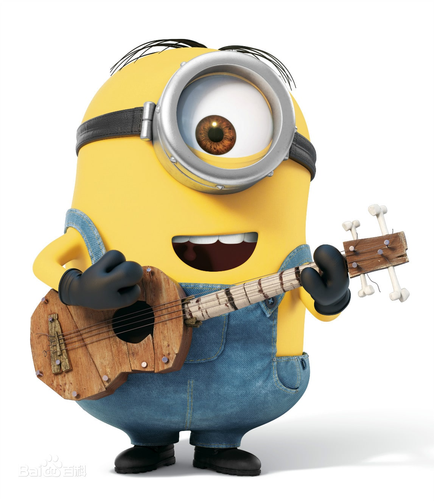
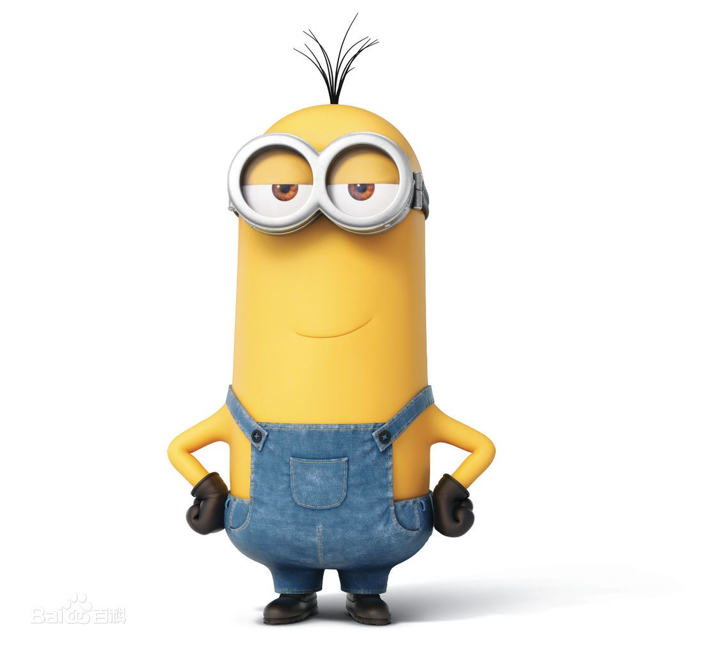
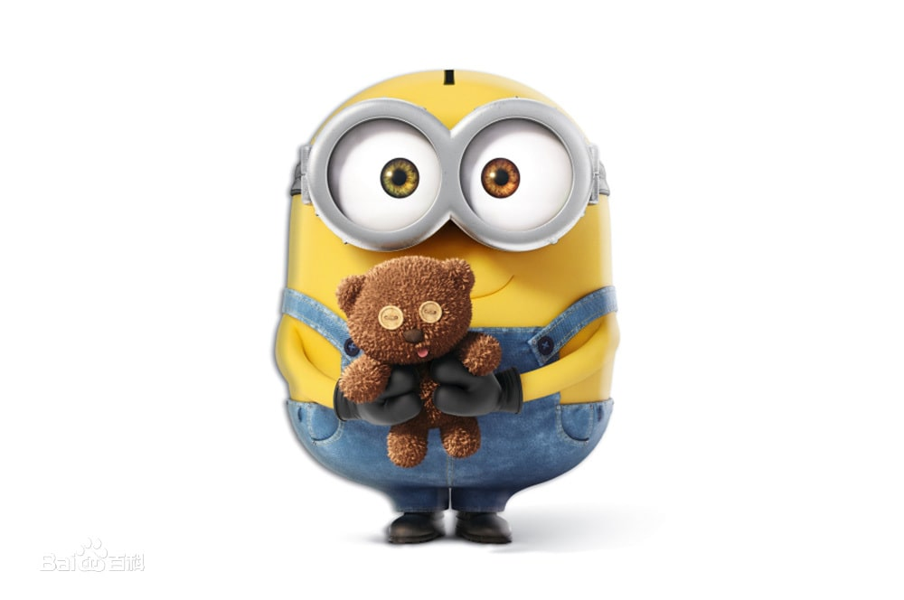
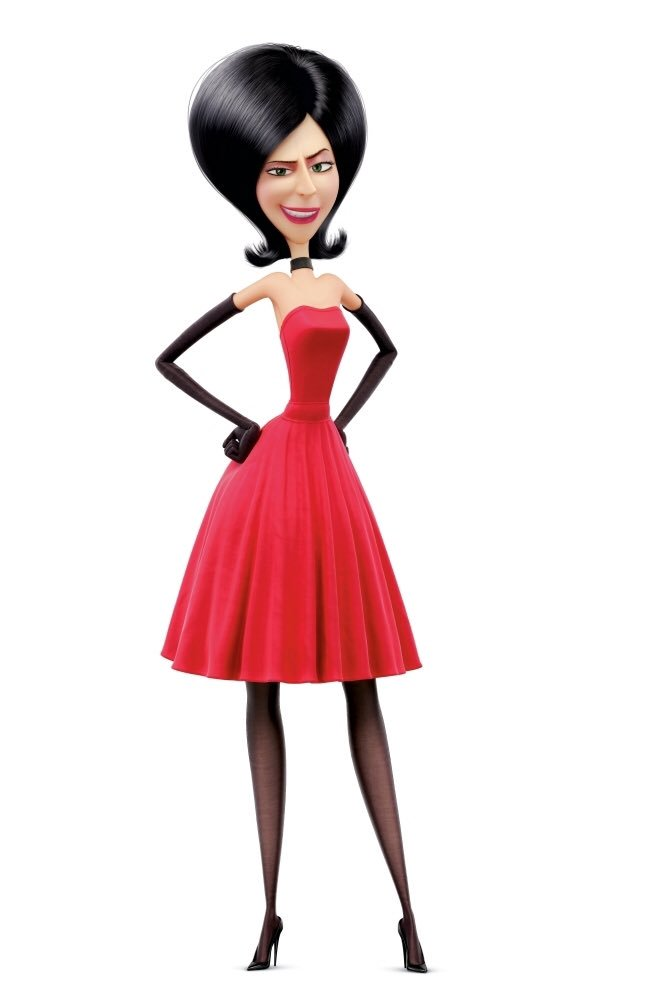
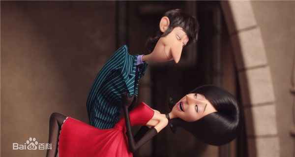
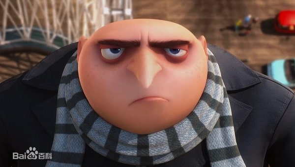

小黄人大眼萌（Minions）
《小黄人大眼萌》（英语：Minions）是2015年上映的美国3D电脑动画喜剧电影，是2010年与2013年上映的电影《神偷奶爸》、《神偷奶爸2》的外传作品，由布莱恩·林奇编剧，由皮埃尔·科芬与凯尔·巴尔达执导，且由克里斯·梅勒丹德利与珍娜·海莉制作。由乔·哈姆和桑德拉·布洛克参与配音演出。此片以小黄人为主要角色，并于2015年6月18日在马来西亚和新加坡、7月9日在台湾和香港、7月10日在美国、9月13日在中国上映。
剧情
《小黄人》围绕小黄人们的“前格鲁时代”展开叙述，并特别追溯了小黄人的起源。小黄人总是忠诚地为主人提供各种服务，兢兢业业，毫无怨言，直到它们失手“害死”每一任主人。在痛苦地失去一个又一个主人后，被困在冰洞之内小黄人们愈发焦躁不安，他们决定挺身而出，去到花花世界，再次寻找可以效劳的主人。
时值上世纪60年代，小黄人三人组无意间看到了“坏蛋大会”广告，该大会声称世界第一女坏蛋斯嘉丽·杀人狂会出席大会并发表演讲。于是，三个小黄人搭上了银行抢劫犯的顺风车。在经历了一系列的坎坷之后，小黄人终于成为斯嘉丽的助手。它们为斯嘉丽执行的第一个任务就是盗取英国伊丽莎白女王的皇冠，任务进展的十分顺利，顺利到呆萌的鲍勃竟然莫名其妙的成为新任国王，于是一系列的麻烦接踵而至。
斯嘉丽让小黄人禅位于己后监禁他们，不解为何的小黄人试图在她加冕时现身并道歉，被斯嘉丽误以为他们暗杀未遂。最后英国女王复位，斯嘉丽突然出现又想偷王冠，结果它被年轻的格鲁夺走，从此所有的小黄人追随格鲁作为他们的新主人。
角色介绍
| 照片 |
名字 |
人物简介 |
|

|
斯图尔特 |
差不多是个青少年，凡事喜欢逞能。他也是小黄人天团中唯一一个只有一只眼睛的人。别问他为什么只有一只眼睛，因为本来就只有一只。
他并不是很在意拯救小黄人们的计划。对他来说，享受冒险的乐趣远大于得到冒险的结果，所以他只喜欢玩、吃东西、演奏音乐、跟妹子搭讪。
|
|

|
凯文 |
凯文是三个小黄人之中的大哥哥，他特别有责任感，非常想做一个英雄。作为小黄人天团的男一号，凯文处处彰显大哥风范。给鲍勃擦污渍，给斯图尔特开路，甚至差点被当成香蕉吃掉。
|
|

|
鲍勃 |
能代言“吓死宝宝”这句话的，非鲍勃莫属。鲍勃是三个小黄人中最小的。他非常天真，对一切事物都充满好奇和爱心，但是鲍勃的胆子也比较小。所以，小熊成了他最好的寄托。
|
|

|
斯嘉丽 |
有史以来最坏、最没有底线的女性大坏蛋，有着征服世界的野心，想成为世界上首位超级女坏蛋，是坏蛋大会上的明星。在整个1960年代，他们从纽约开始作恶，一直走到了伦敦，最后被格鲁所取代。
|
|

|
赫布 |
斯嘉丽的丈夫，在片中提供了许多武器发明。 |
|

|
格鲁 |
为本片客串的一个年轻人，是小黄人最后选择的新主人。 |
幕后花絮
- 影片中出现的899个小黄人都由导演皮艾尔·柯芬配音。
-
《神偷奶爸2》片尾的彩蛋可以看成是本片的预告片，里面可以看到有三个小黄人在为电影试镜。
-
影片中，三个小黄人用了多个国家的语言说了“谢谢”这句台词，譬如印尼语“terimakasih”、西班牙语“gracias”、马来语“terima
kasih”等等。
- 小黄人鲍勃的两只眼睛是不同颜色的，这在医学上叫做虹膜异色症。
-
影片的故事发生在1968年，也就是BG42年，即“格鲁前42年”。1968加上42刚好是2010年，在那一年格鲁与小黄人在影片《神偷奶爸》中首次登场。
-
片中有三个小黄人分别是以格鲁的三个女儿玛戈、艾格尼丝以及伊迪斯的样貌来设计的。
- 桑德拉·布洛克在本片中配音的角色是她演艺生涯中第一次饰演坏人。
-
影片中斯图尔特演奏了VanHalen《Eruption》中的著名的吉他独奏，然而这首歌是在1978年发表的，而影片故事发生在1968年，整整提前了十年。
-
片中，小黄人用十进制货币购买了伦敦塔的参观票。然而直到1971年，英国人才开始使用这种新货币，在影片故事发生的1968年应该还在使用英镑、先令和便士。
-
小黄人来到纽约的时候，理查德·尼克松正在参加1968年的美国总统大选，广告牌上可以见到他的广告，宣传标语为“终于出现了一个值得你信任的名字”，现在看来颇具讽刺意味。
-
尽管影片设定发生在BG42年（格鲁前42年），但这里的“B-before前”并非是格鲁出生前，因为这时格鲁已经诞生了（虽然是个孩子），片中格鲁有几处客串，小黄人还见到了他。片尾处格鲁打败了斯嘉丽，成为了新一代的大坏蛋。